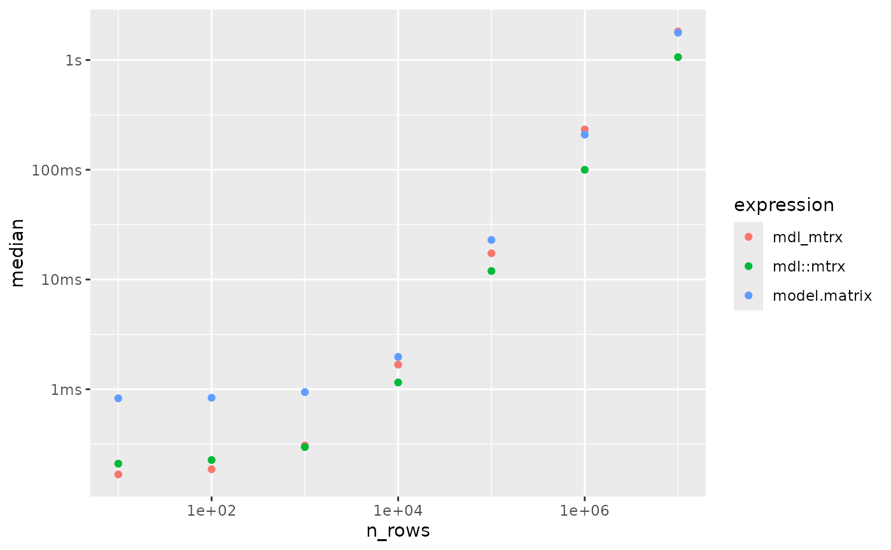

A critical reader might suggest that, given that
mdl::mtrx() does quite a bit less than
model.matrix(), it’s not really suprising that it would run
more quickly than model.matrix(). How fast could we make an
analogue to mdl::mtrx() in “plain R” (i.e. without rust)?
Let’s see.
A plain R alternative
mdl::mtrx() is mostly just a glorified
as.matrix() method for data frames that makes dummy
variables out of factors, characters, and logicals. Let’s see if we mock
up a plain R alternative, mdl_mtrx(), that’s just as
fast.
First, we’ll write a helper to apply to factors to convert them to
dummy variables, loosely based on
hardhat::fct_encode_one_hot().
x <- factor(sample(letters[1:3], 100, replace = TRUE))
fct_encode_dummy <- function(x) {
row_names <- names(x)
col_names <- levels(x)
col_names <- col_names[-1]
dim_names <- list(row_names, col_names)
n_cols <- length(col_names)
n_rows <- length(x)
x <- unclass(x)
out <- matrix(0L, nrow = n_rows, ncol = n_cols, dimnames = dim_names)
loc <- cbind(row = seq_len(n_rows), col = x - 1)
out[loc] <- 1L
out
}It’s hard to beat R at converting characters to factors, so we’ll
convert character vectors to factors and then to dummy variables via
fct_encode_dummy(). The rest of the variable types we’ll
test here are one-liners.
to_numeric <- function(x) {
switch(
class(x),
numeric = x,
integer = x,
character = fct_encode_dummy(as.factor(x)),
factor = fct_encode_dummy(x),
logical = x
)
}
mdl_mtrx <- function(formula, data) {
predictors <- mdl:::predictors(formula, data)
cols <- lapply(data[predictors], to_numeric)
do.call(cbind, cols)
}We’ll use a data frame with a variety of types to benchmark in this article. Wrapping in a quick function:
create_data_frame <- function(n_rows) {
data.frame(
outcome = runif(n_rows),
pred_numeric = runif(n_rows),
pred_integer = sample(c(0L, 1L), n_rows, replace = TRUE),
pred_logical = sample(c(TRUE, FALSE), n_rows, replace = TRUE),
pred_factor_2 = factor(sample(letters[1:2], n_rows, replace = TRUE)),
pred_factor_3 = factor(sample(letters[1:3], n_rows, replace = TRUE)),
pred_character_2 = sample(letters[1:2], n_rows, replace = TRUE),
pred_character_3 = sample(letters[1:3], n_rows, replace = TRUE)
)
}
d <- create_data_frame(5)
d
#> outcome pred_numeric pred_integer pred_logical pred_factor_2 pred_factor_3
#> 1 0.2485387 0.1645692 0 TRUE a a
#> 2 0.4028812 0.6632066 0 TRUE b b
#> 3 0.7696302 0.8565750 1 TRUE a b
#> 4 0.1194854 0.9265464 0 TRUE b c
#> 5 0.1946950 0.5523776 0 FALSE b c
#> pred_character_2 pred_character_3
#> 1 b c
#> 2 a a
#> 3 b a
#> 4 b c
#> 5 a cPassing each of those data types to make sure our new function
mdl_mtrx() does what we want in the simplest case:
mdl_mtrx(outcome ~ ., d)
#> pred_numeric pred_integer pred_logical b b c b c
#> [1,] 0.1645692 0 1 0 0 0 1 1
#> [2,] 0.6632066 0 1 1 1 0 0 0
#> [3,] 0.8565750 1 1 0 1 0 1 0
#> [4,] 0.9265464 0 1 1 0 1 1 1
#> [5,] 0.5523776 0 0 1 0 1 0 1Okay, so, no type checking, plenty of issues with edge cases, lean and mean R function. Let’s check the timings out, first on a very small dataset:
d <- create_data_frame(30)
bench::mark(
mdl_mtrx = mdl_mtrx(outcome ~ ., d),
`mdl::mtrx` = mdl::mtrx(outcome ~ ., d),
model.matrix = model.matrix(outcome ~ ., d),
check = FALSE
)
#> # A tibble: 3 × 6
#> expression min median `itr/sec` mem_alloc `gc/sec`
#> <bch:expr> <bch:tm> <bch:tm> <dbl> <bch:byt> <dbl>
#> 1 mdl_mtrx 151µs 161µs 6095. 38KB 21.9
#> 2 mdl::mtrx 195µs 205µs 4729. 801KB 18.9
#> 3 model.matrix 765µs 807µs 1224. 489KB 21.4Not bad, scrappy little feller! Now, on a few more reasonably sized datasets:
res <-
bench::press(
n_rows = 10^seq(2:8),
{
d <- create_data_frame(n_rows)
bench::mark(
mdl_mtrx = mdl_mtrx(outcome ~ ., d),
`mdl::mtrx` = mdl::mtrx(outcome ~ ., d),
model.matrix = model.matrix(outcome ~ ., d),
check = FALSE
)
}
)
ggplot(res) +
aes(x = n_rows, y = median, col = expression) +
geom_point() +
scale_x_log10()
If the log scale is tripping you up, here’s a slice of data for the largest numbers of rows:
res %>%
select(expression, median, mem_alloc) %>%
tail(3)
#> # A tibble: 3 × 3
#> expression median mem_alloc
#> <bch:expr> <bch:tm> <bch:byt>
#> 1 mdl_mtrx 1.88s 3.02GB
#> 2 mdl::mtrx 1.14s 1.84GB
#> 3 model.matrix 2.87s 4.17GBIn this timing, model.matrix() took 2.5x slower than
mdl::mtrx(), and our speedy plain R approach took 1.6x as
long.